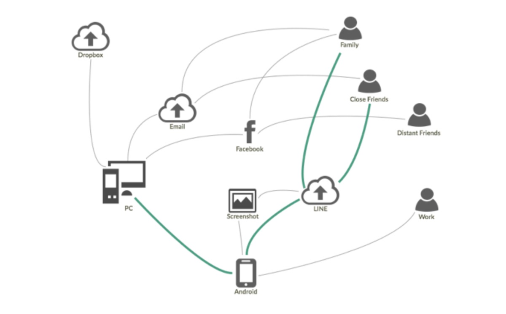
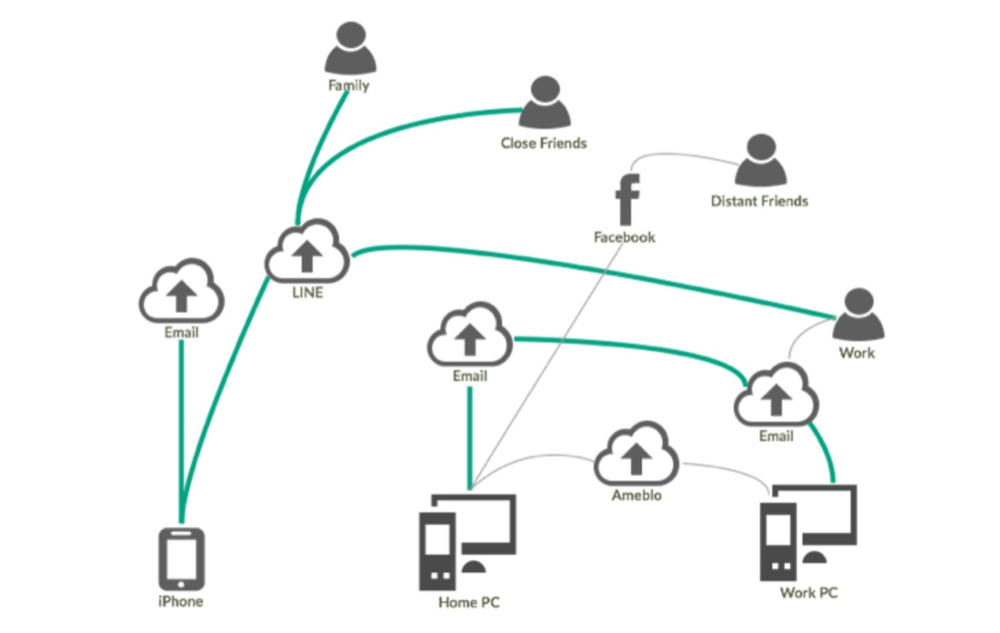
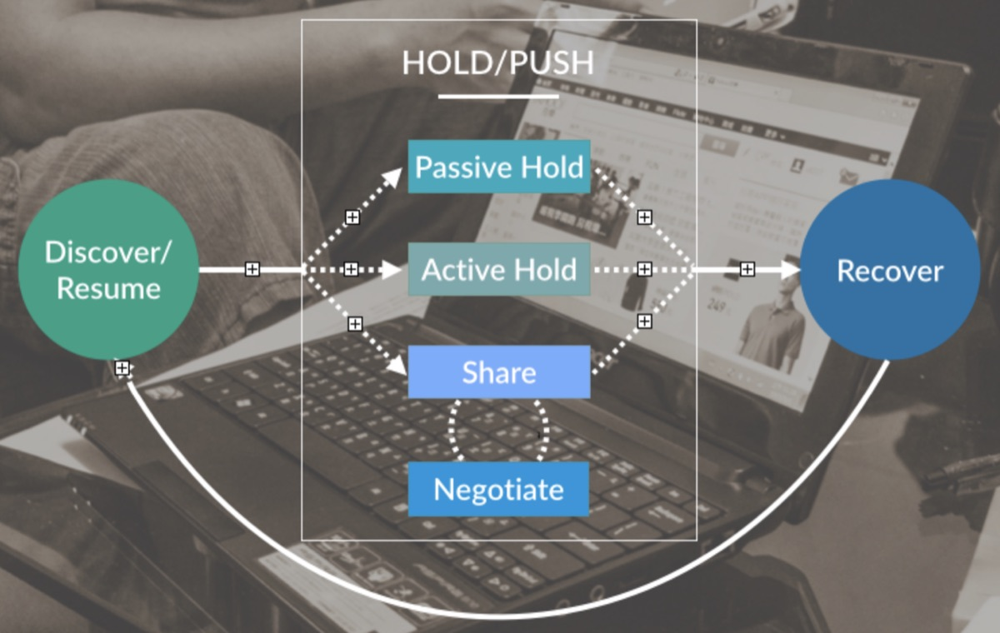
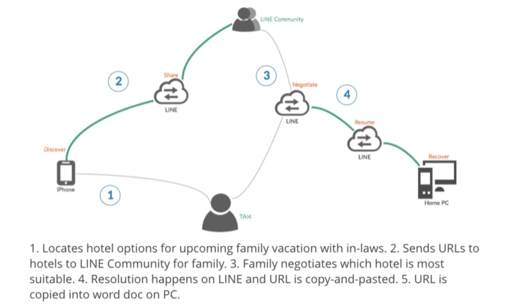

Task Continuity: Taiwan & Japan

Co-written with Bill Selman
Last time we wrote on this topic, we shared our observations and results from our research into multi-device workflows and task continuity in the United States. As we reported then, our participants are using the tools they have at-hand to construct larger workflows. The most popular of those tools being screenshots, SMS, and email.
Unlike most other markets that charge per SMS, the US has a unique mobile services pricing structure that often includes almost unlimited SMS in a monthly service fee. In other regions of the world, SMS has been replaced by communication tools like messaging apps (such as Whatsapp). In contrast, messaging apps have lower penetration in the US (for example, Whatsapp has 8% penetration in the US compared to say 69% in India). While the overall usage of SMS is declining even in the US, SMS is still a lower cost and accessible task continuity strategy here.
The question is: how are users in other regions using different tools for task continuity? And if they are replacing SMS with Messaging apps, how they are employing other task continuity strategies differently?
Since Firefox is a global product, we believe it’s important to meet the needs of all of our users. To that end, we organized a similar field study to our US project, but in two more economically advanced east Asian markets: Japan and Taiwan.
Research Questions and Methodology
In order to compare and contrast, we followed the same research methodology that we employed in our previous study of task continuity in the US. The primary difference in our field work and analysis was an emphasis on the question of how region and culture affect users’ task continuity strategies.
We interviewed 5 participant groups in and around Taipei, Taiwan and 5 participant groups in and around Tokyo and Yokohama, Japan. In total, we interviewed 13 participants. All 10 interviews took place in the participants’ homes. In addition to our primary research questions, the semi-structured interviews explored daily life, devices, and integration points. Further, participants provided home tours and engaged in multi-device workflow future thinking exercises.
Results
Taiwan and Japan
As we hypothesized, messaging apps have a strong role in task continuity in Taiwan and Japan. Every participant we interviewed used the messaging app LINE frequently to communicate with friends, family, and work associates as well as to continue tasks.
LINE allows users to set up specific groups of contacts called “communities” that can be messaged simultaneously. Participants used this feature to share and negotiate tasks and information.
LINE has replaced other communication and continuity channels such as SMS and email. SMS is viewed as “outdated.”
With the exception of photos, data and task continuity appears to be less precious among the participants we interviewed than in the US. Almost no participant mentioned alarm about the possibility of losing data or not being able to reconstruct a task.
Participants in both markets appeared to have shorter recovery horizons overall; in other words, most task continuity was for items for later that day or week. Bookmarks were used for longer, more persistent recovery horizons, but use was more for frequently visited sites.
Both Taiwan and Japan appear to be instructional cultures. In public places, visual instructions were present. Some participants mentioned that they were not aware how to use some tools well but also believed that they were missing out by not using them. For example, TOK2 said, “I’m not good at Evernote. I wish I could become better at Evernote.”
Compared to the US, we observed more device specificity among participants.
Yahoo! remains a popular starting point for browsing in both markets.
Taiwan
For our participants who were not information workers, email as a communication tool has been replaced by LINE or Facebook. Email is now used primarily as an identity tool to manage accounts for shopping or services such as banking.
With the exception of the software engineer, participants expressed little knowledge of device-to-device sharing (except for transferring music) or continuity. For example, browser syncing across devices currently enjoys no usage among all but one of our participants.
With the exception of a software engineer, cloud services were not used frequently among our participants as task continuity or storage tools. Participants were either not aware of cloud storage as a service or had a strong distrust of the security and privacy of cloud services (based on recent highly publicized hacking incidents).

Device Ecosystem in Taiwan
Japan
High fragmentation of devices with limited task continuity. Fragmentation extends to services and strategies. For example, every participant had a different email address for each device. We speculate this fragmentation stems from:
A cultural separation between work and personal life.
An operator policy that supplies an email addresses to each smartphone account.
A culture that favors physical media and tangible objects. (e.g., many activities are still paper-based, none of the participants used streaming services and continue to buy or rent CDs and DVDs).
Due to the high fragmentation of devices, only TOK5 used cloud services; even he said that he was an outlier in this regard at his office.
Google search is used as a primary search engine and some participants had Gmail accounts, but other Google services such as Drive appear to have less penetration.

Device Ecosystem in Japan Demonstrating Device Fragmentation

Updated Task Continuity Model.
Our research in Japan and Taiwan led us to expand the Hold/Push stage of the task continuity cycle we developed based on the US research. In Japan and Taiwan (but also to some extent in the US), we observed that when participants shared data or a task, the sharing was accompanied by a social negotiation. That is, participants used some communication platform to discuss how to recover the task.
For example, TAI4 described an instance of this process: When planning a vacation with family, he or his wife send links to a LINE family group for suggested destinations and dates. The family members discuss the destination or alternatives via LINE. Once a destination is agreed upon, the task is resumed by reserving the destination or including it in the travel itinerary

Example of Hold/Push Sharing Negotiation
Task Continuity: Similarities to the U.S.
We observed the following similarities when comparing our participant groups’ task continuity strategies in Taiwan/Japan to our groups’ strategies in the US.
Ad Hoc & Personal: Many participants were not knowledge workers and did not have access to tools or skills for more “traditional” workflows.
Satisficed Solutions: Participants are relatively happy with their task continuity systems, but aware that better solutions likely exist.
Smartphones: Smartphones were the dominant device in most task continuity ecosystems.
Common Strategies: In all three countries, email, cloud storage, phone calls, and bookmarks were popular task continuity strategies.
Password Management: Recalling logins and passwords is a challenge. Most of our participants stored passwords on paper or locally in a spreadsheet or digital notepad. In all three countries, most participants re-used the same passwords or used a personal system to create password patterns.
Device Continuity: Some multi-device continuity is being achieved through iCloud and Chrome (though this was less common in Taiwan and Japan).
Sharing is Saving: Many “sharing” services like email and texting have been repurposed for saving functions.
Task Continuity: Differences to the US
We observed the following differences when comparing our participant groups’ task continuity strategies in Taiwan/Japan to our groups’ strategies in the US.
Primary Strategies: LINE, email, and bookmarks were the primary task continuity strategies in Taiwan and Japan.
Screenshots: Screenshots were not as prevalent as a task continuity strategy among our participants in Taiwan, and even less so in Japan.
Cloud Storage: While cloud storage was a known service in both Taiwan and Japan, few of our participants used cloud storage and several said they had stopped using cloud services due to widely publicized security concerns–specifically, the Sony data breach and the hacking of celebrity iCloud accounts.
Email: Email was a popular task continuity strategy in both Taiwan and Japan, but participants appeared to be less concerned about adding metadata for future search retrieval and communication tasks had primarily moved to LINE.
Streaming: In Japan, most of our participants still rented physical music (CDs) rather than use streaming services.
Bookmarks: Bookmarks were a more popular task continuity tool among our participants in both Taiwan and Japan than in the United States. In one Taiwanese household, bookmarks on the family PC were used as a means of collaboration for planning future events.
Not Automatic: Unlike the United States, there was less of an expectation that organization should be automatic.
Observations
Based on our two studies, we learned that the content of task continuity strategies varies a good deal among different markets. Participants adopt technologies that are prevalent among their peers, easily accessible, and are cost-effective. These qualities for different technologies vary greatly. However, ultimately, with the adjustments to our task continuity model, the form of task continuity is strikingly similar among different markets.
The main difference we observed when comparing Japan and Taiwan to the U.S. was the presence of a greater degree of more complex social negotiation (in terms of the number of participants). Since LINE places emphasis on communities in the user experience compared to groups in SMS messaging apps, the more extensive negotiation could be attributable to the prevalence of LINE in Asia.
While the form may be the same for task continuity, the differences in context and content are important to consider when building task continuity actions and activities into technology. As is the case with most technology, end-users use tools and functionality differently than designers and engineers anticipate. Thinking on these studies, it is remarkable how many participants used tools designed to share data as a means to save data for themselves or for later. Designers and engineers must consider how to adapt their multi-device task flows to incorporate actions not just for one-off sharing but for persistence and negotiation with others.